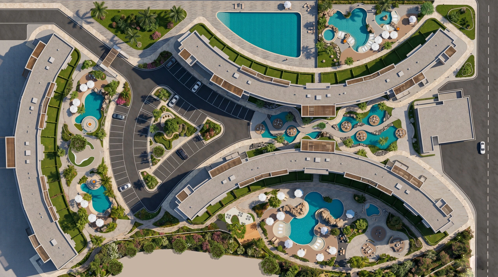

Porto Golf is a landscape visualization story exploring a continuous resort environment shaped by pools, planted courts, shaded movement, social decks, and lifestyle moments.
The page moves from the overall masterplan into Plaza 201, Plaza 133, Plaza 203, and the central spine, then closes with a cinematic lifestyle epilogue.
ClientAmer Group
LocationEgypt
TypeLandscape / Hospitality
VisualizationDesign Sector

Masterplan Journey
The landscape as a connected resort spine.
Scroll through the plan to move from the full resort layout into the main plazas, pool courts, and central spine.